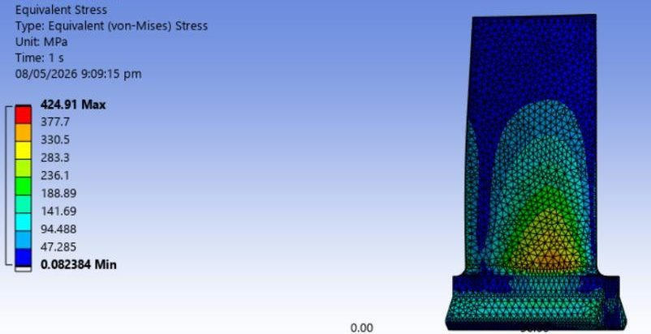
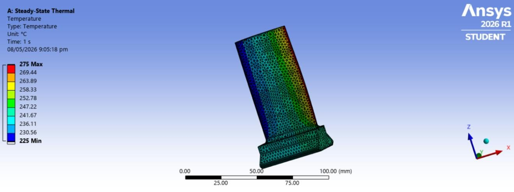
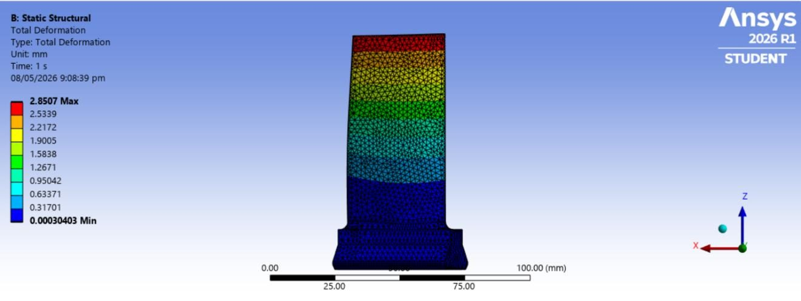
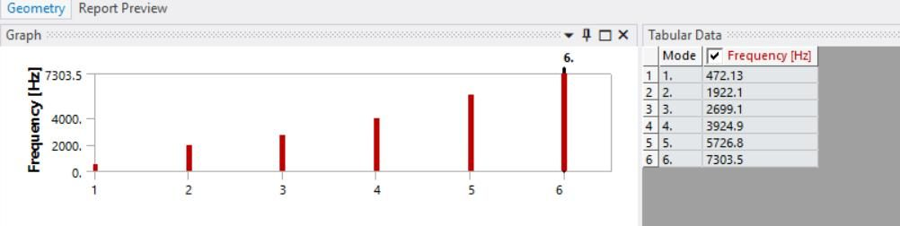
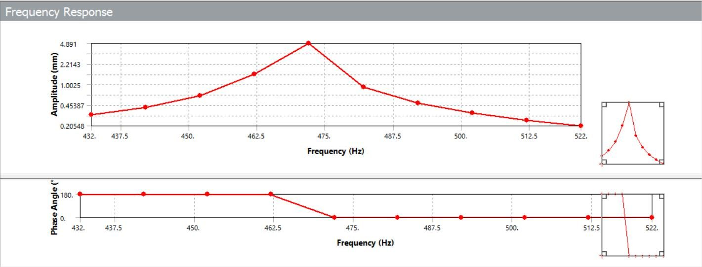

Finite Element Analysis of an Axial Compressor Rotor Blade
Summary
What
Coupled thermal, structural, modal and harmonic response analysis of a titanium axial compressor rotor blade in ANSYS Workbench.
Role
Set up and ran the thermal, structural, modal and harmonic analyses of a titanium compressor blade in ANSYS Workbench, in a team of 5.
Results
- Peak von Mises stress of 424.91 MPa at the root fillet, with about 2.85 mm maximum deformation near the tip.
- First natural frequency of 472.13 Hz, with six modes up to 7303.5 Hz.
- Harmonic response peaks near 472 Hz.


Problem
Compressor blades carry centrifugal load, thermal gradients and pressure at the same time, and failures tend to start at the root. The study checks stress, deformation and resonance of a titanium blade under combined loading at 1000 rpm.
Method
- Imported and cleaned the 3D blade geometry in ANSYS Workbench. Titanium alloy properties: Young's modulus 110 GPa, Poisson ratio 0.34, density 4430 kg/m3, thermal conductivity 6.7 W/m K, specific heat 560 J/kg K and thermal expansion 8.6e-6 per °C.
- Meshed with tetrahedral elements at a uniform 1 mm size.
- Steady-state thermal analysis with 225 °C at the leading edge and 275 °C at the trailing edge.
- One-way thermal to structural coupling: static structural analysis with the imported temperature field, 1000 rpm rotation, 0.2 MPa pressure on one surface, a fixed support at the root and extra displacement constraints to stop rigid body motion.
- Prestressed modal analysis including rotation and thermal load.
- Harmonic response analysis with a frequency sweep from 422 to 522 Hz around the first mode.
Results
Temperature rises smoothly from the leading edge toward the trailing edge. Maximum total deformation is about 2.85 mm near the tip. Maximum equivalent (von Mises) stress is about 424.91 MPa at the root and fillet. The report places this below the yield strength of titanium alloys such as Ti-6Al-4V and gives no numeric margin. Natural frequencies are 472.13, 1922.1, 2699.1, 3924.9, 5726.8 and 7303.5 Hz, and the first is the fundamental bending mode. The harmonic response shows a clear resonance peak near 472 Hz with a rapid phase change.








Validation
Results were compared with trends in published literature, for example stress concentration at the root.
Limitations
- No mesh convergence study. One uniform 1 mm tetrahedral mesh.
- No experimental validation.
- One-way coupling, steady-state thermal analysis only and a single set of material properties.
- The aerodynamic load is a uniform 0.2 MPa on one surface and is not a CFD result.
- Fatigue life, transient thermal analysis and CFD-coupled loading are future work.
Tools
- ANSYS Workbench